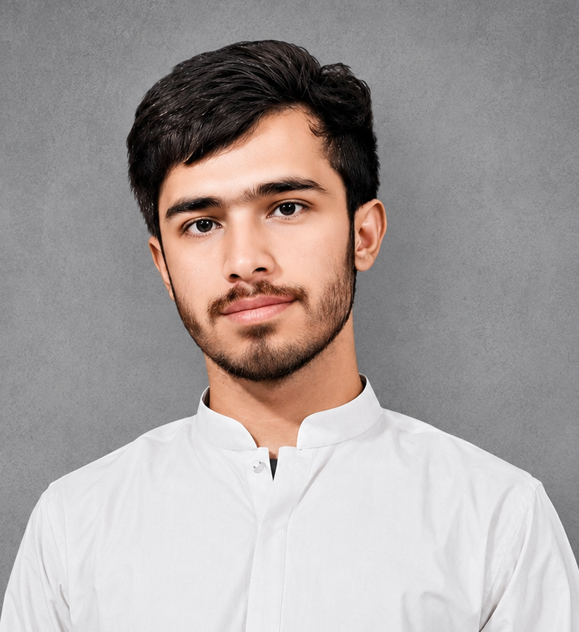

SafePK Founder & Developer
Cybersecurity Student | Future Ethical Hacker
I am Kamran Liaquat, a cybersecurity student passionate about technology, digital security, and building safer online environments.
SafePK is my cybersecurity awareness project created to help users understand online threats, avoid scams, and improve their digital safety.
My mission is to contribute towards making Pakistan more secure by spreading cybersecurity awareness and encouraging responsible internet usage.
I am continuously learning cybersecurity, ethical hacking, web development, and security concepts to build useful solutions for the future.
SafePK © 2026
Building a safer digital future for Pakistan